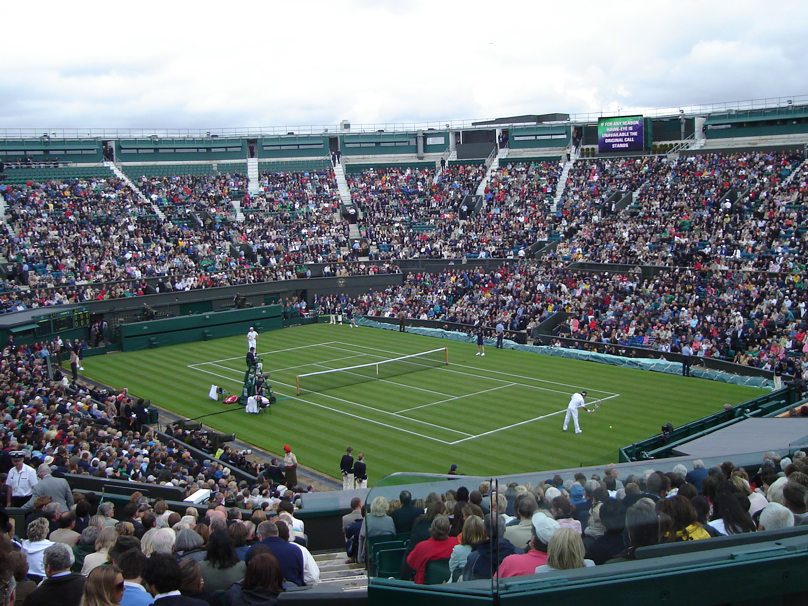
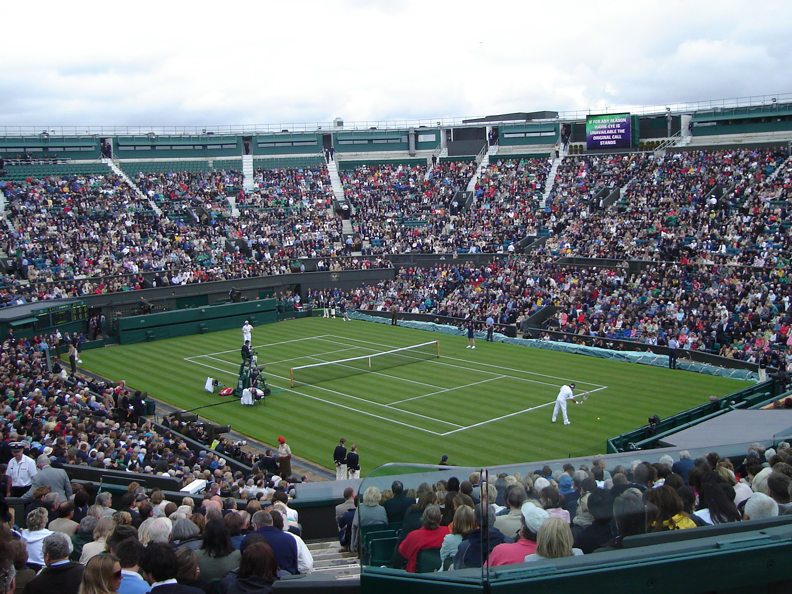

Tom Bamford's Portfolio!
Welcome to my digital portfolio!
Extracurricular Activities!
 One of my favorite extracurricular activities was playing basketball on the rhoades basketball team. I believe that joining the basketball team was extremely beneficial since it showed me how much fun it was to join a team sport. In addition, the teamwork that is involved with basketball helped strengthen my friendships with my peers.
I also play tennis casually, however I am contemplating playing tennis competitively since I have noticed significant improvement after taking multiple lessons.
One of my favorite extracurricular activities was playing basketball on the rhoades basketball team. I believe that joining the basketball team was extremely beneficial since it showed me how much fun it was to join a team sport. In addition, the teamwork that is involved with basketball helped strengthen my friendships with my peers.
I also play tennis casually, however I am contemplating playing tennis competitively since I have noticed significant improvement after taking multiple lessons.